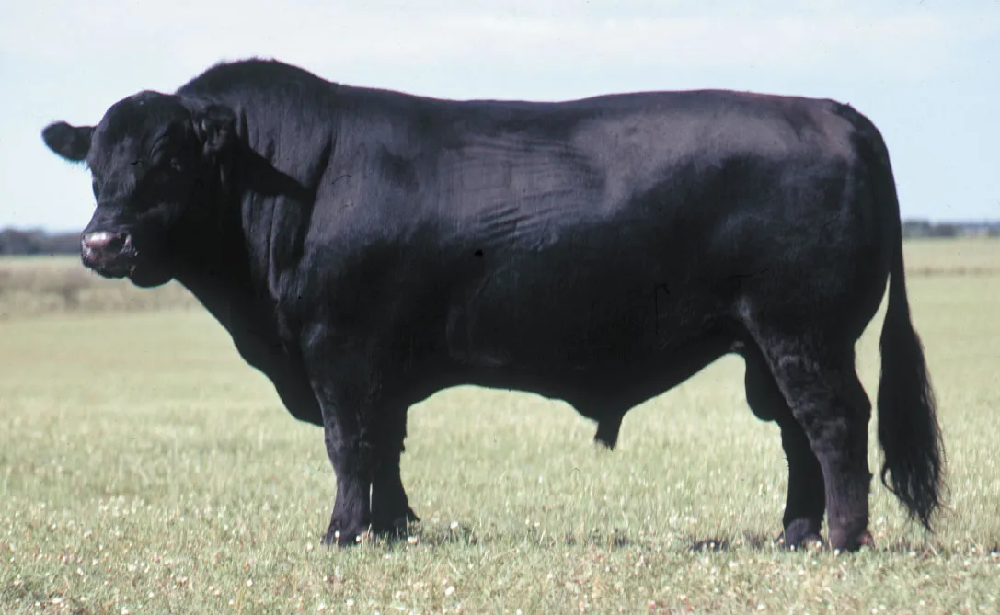
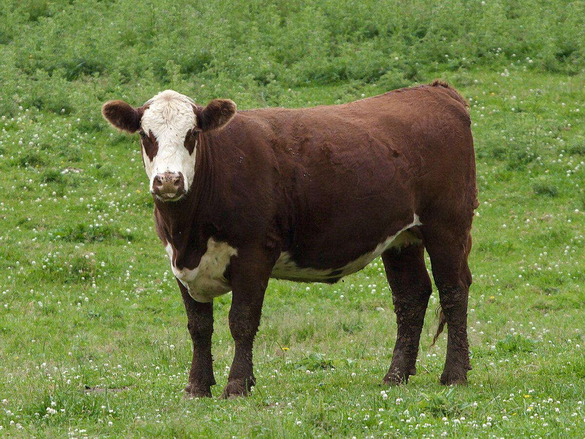
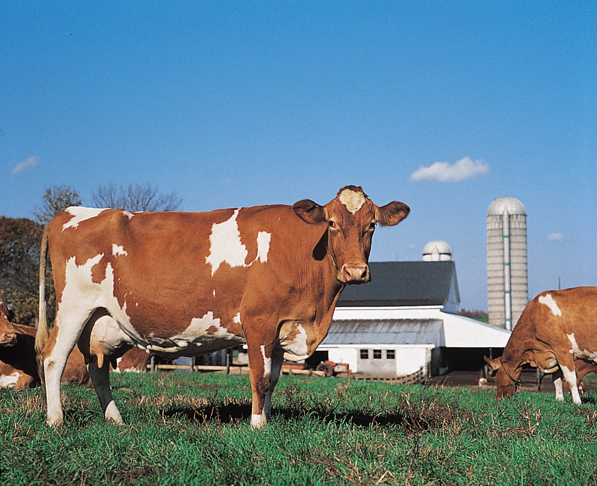

Cow Breeds
Here are some of the most popular cow breeds:
Holstein
Jersey

Angus

Hereford

Guernsey
All photos on this page are courtesy of Wikipedia.com
Home
Learn More
What to Feed a Cow
Where to Find Cow Breeds